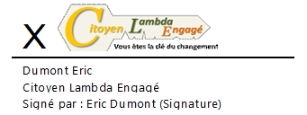

Conclusion provisoire :
« Nous citoyens avons une carte à jouer »
La Démocratie, c'est avant tout l'égalité des droits et des devoirs des citoyens.
Nous pensons peut-être à tort que nous ne pouvons pas être représentés par n’importe quelle personne. Nous tenons sans doute cela de notre éducation. Nous
sommes convaincus que la valeur ajoutée qu’apporte notre système éducatif est garante d’une bonne gestion des affaires publiques et
que le comportement de nos élus sera sans reproche. Mais combien d’articles de presse ne nous révèlent-ils pas les dérives d’une partie de nos
dirigeants politiques ?
Nous devons donc nous convaincre que nous sommes tous dotés de raison. Nous savons faire la part des choses. Et nous avons développé suffisamment nos intelligences pour décider du type de société dans laquelle nous voulons vivre. Nous construisons nos vies et endossons notre part de responsabilité au jour le jour sans que pour autant nous ne l’ayons appris durant notre parcours scolaire ou académique. Nous avons en chacun de nous le bon sens nécessaire, cette humanitude comme le dit Jacques Testart, pour diriger nos vies de citoyen.
Notre système est à bout de souffle et pour cause, la compétition ancrée en son sein le ronge et crée un système qui exclut des voix de l'électorat. Il cherche à mettre à sa tête un minimum de partis pour faciliter la mise en place d'accords post-électoraux, alors que l'intérêt général tant recherché, requiert un système inclusif, qui cherche à ce que chacun puisse être entendu et représenté. Mais pour cela, il nous faudrait des démocrates et non des compétiteurs sur les listes électorales. Alors, que fait-on maintenant ?
Le seul contre-pouvoir, c'est nous, citoyens belges. Nous nous devons de réclamer une représentation pour tous. Et si nous voulons avoir à la tête de toute assemblée, une classe dirigeante qui reflète sa population, il faudra que le système permette à chacun de participer de manière libre à la construction de cette communauté.
Nos représentants politiques devraient-ils s'offusquer que le système dont ils sont parties prenantes soit remis en partie en cause par des citoyens ?
Non ! Il est légitime pour tout citoyen de remettre en cause tout ce qui lui apparaît contraire à ce qui lui a été annoncé.
Benjamin Constant (1767-1830)
Merci d’accueillir cette réflexion avec le recul nécessaire.
Je tiens à remercier chaleureusement toutes celles et ceux qui ont contribués, peut-être bien malgré eux, à cette publication, mais également les anonymes, qui préfèrent rester dans l'ombre, et qui de par leurs réflexions nous poussent toujours un peu plus vers des pistes de solutions encore plus élargies.
Je reste à l’entière disposition de celles et ceux qui désirent raisonner sur ce thème, avec le respect des idées de chacun qui l’accompagne.
Si cette publication vous a appris des choses, n'hésitez pas à en partager son lien Internet.

Contactez-moi !